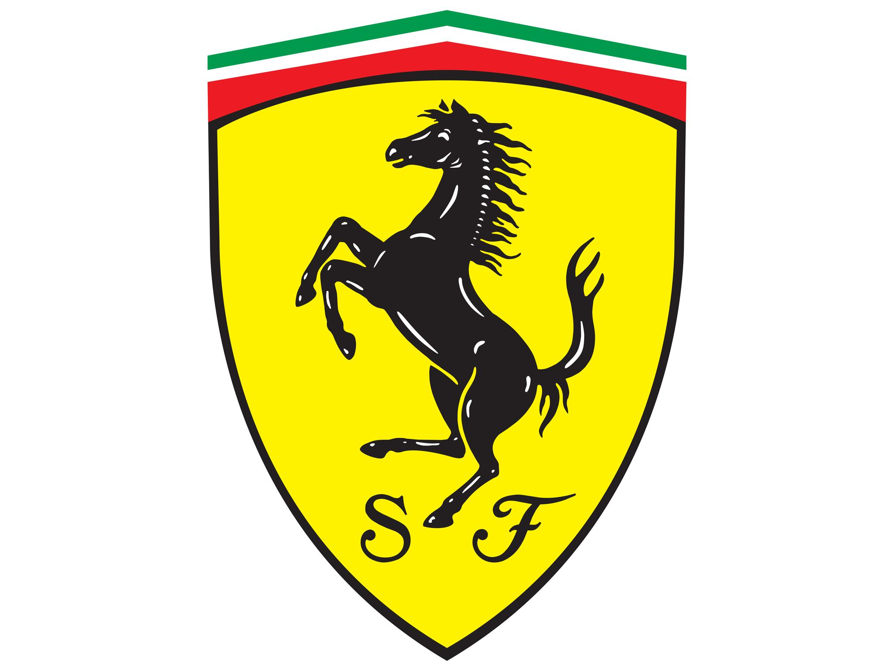
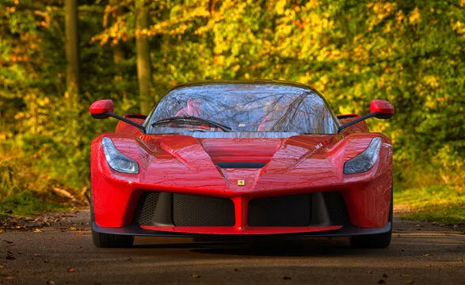

Benvenuti nel mondo Ferrari
Ferrari è una casa automobilistica italiana conosciuta soprattutto per la produzione di automobili sportive ad alte prestazioni.
Il marchio Ferrari è associato a velocità, prestazioni, design e innovazione tecnologica.
Le automobili Ferrari sono conosciute in tutto il mondo e rappresentano una parte importante della storia dell'automobilismo italiano.
Il simbolo della Ferrari

Il Cavallino Rampante è uno degli elementi più riconoscibili del marchio Ferrari.
Che cos'è Ferrari?
Ferrari è un'azienda italiana specializzata nella progettazione e produzione di automobili sportive e ad alte prestazioni.
La Ferrari è conosciuta anche per la sua partecipazione alle competizioni automobilistiche, soprattutto nel campionato di Formula 1.
Il mondo Ferrari comprende quindi diversi aspetti:
- automobili sportive stradali;
- competizioni automobilistiche;
- tecnologia e innovazione;
- design italiano;
- prestazioni elevate.
Le automobili Ferrari
Ferrari produce automobili sportive caratterizzate da prestazioni elevate, design italiano e tecnologia avanzata.

Ogni automobile Ferrari combina design, tecnologia e prestazioni per offrire un'esperienza di guida particolare.
Alcuni famosi modelli Ferrari
Nel corso della sua storia Ferrari ha prodotto numerose automobili diventate famose.
- Ferrari 250 GTO
- Ferrari F40
- Ferrari Enzo
- LaFerrari
- Ferrari SF90 Stradale
- Ferrari 296 GTB
Ogni modello presenta caratteristiche diverse e rappresenta una parte dell'evoluzione tecnologica e stilistica dell'azienda.
Per conoscere meglio i modelli Ferrari, visita la pagina I Modelli.
Ferrari e il Motorsport
Il motorsport rappresenta una parte importante della tradizione Ferrari.
La Scuderia Ferrari è una delle squadre più conosciute della Formula 1.

La competizione automobilistica è una parte fondamentale della storia Ferrari.
Per approfondire la storia della Ferrari in Formula 1, visita la pagina Formula 1.
Tecnologia e innovazione
La ricerca tecnologica è una parte importante della progettazione delle automobili Ferrari.
Alcuni elementi importanti sono:
- motori ad alte prestazioni;
- aerodinamica;
- materiali leggeri;
- sistemi elettronici;
- tecnologie ibride.
Scopri di più nella pagina Tecnologia.
Curiosità sulla Ferrari
- Ferrari è un marchio italiano famoso in tutto il mondo.
- Il Cavallino Rampante è il simbolo della Ferrari.
- Il colore rosso è fortemente associato alle automobili Ferrari.
- Ferrari è conosciuta sia per le automobili stradali sia per le competizioni automobilistiche.
- La Formula 1 è una parte importante della tradizione Ferrari.
Esplora il sito
Continua a conoscere il mondo Ferrari attraverso le altre pagine del nostro sito: